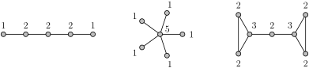
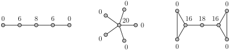

Chapter 2 Centrality Measures
Here are the network and centrality definitions that we will need.
Let \(G=(V,E)\) be a network (graph) on \(N\) vertices.
Let \(k_i = \deg(i)\) be the degree of vertex \(i\)
Let \(d_{i,j} = d(i,j)\) be the distance between vertices \(i\) and \(j\)
Let \(n_{s,t}\) be the number of geodesics (shortest paths) from \(s\) to \(t\)
Let \(n_{s,t}(i)\) be the number of \((s,t)\)-geodesics that go through vertex \(i\)
Exercises Practice Problems
1. Understanding Centrality Measures.
For each centrality measure, give an intuitive explanation of what is "central" about vertices with large values.
Degree Centrality
Betweenness Centrality
Closeness Centrality
Note that there are many possible answers: these are just example responses.
Degree Centrality: Such a person has lots of direct connections. Therefore she have direct access to the resources/information of their neighbors. Such a person might be influential since many others will listen to her point of view.
Betweenness Centrality: Such a person lies on the shortest path between many pairs of people. Therefore, information traveling between those people will often pass through her. Therefore, she can control the flow of information. Or perhaps she is leveraging her location by acting as a broker: it is to her advantage that these pairs of people don't have direct access to one another. She can act as a "middle man," and benefit from this role.
Closeness Centrality: Such a person lies close to many people in the network. Therefore she will receive information quickly. This could allow her to react in a timely manner, regardless of the source/location of the new information. Being well-informed is another type of power.
2. Centrality Calculation Examples.
For each of the following graphs, calculate the (unnormalized) degree centrality, betweenness centrality and closeness centrality
Degree Centrality \(c_i^D = \deg(i) = k_i\)

Betweenness Centrality \(c_i^B = \displaystyle{\sum_{s \neq i} \sum_{t \neq i, s} \frac{n_{s,t}(i)}{n_{s,t}}}\)
Closeness Centrality \(c_i^C = \displaystyle{\frac{1}{\sum_{j} d_{i,j}}}\)

Degree Centrality \(c_i^D = \deg(i) = k_i\)
Betweenness Centrality \(c_i^B = \displaystyle{\sum_{s \neq i} \sum_{t \neq i, s} \frac{n_{s,t}(i)}{n_{s,t}}}\)
Closeness Centrality \(c_i^C = \displaystyle{\frac{1}{\sum_{j} d_{i,j}}}\)
3. Contrasting Centralities.
In the following table, we consider interesting vertices that score highly in one centrality, but not in another. Describe or draw a network topology and vertex positions that could satisfy each combination below.
| Low Degree | Low Closeness | Low Betweenness | |
| High Degree | N/A | ||
| High Closeness | N/A | ||
| High Betweenness | N/A |
There are many ways to make graphs that distinguish these centrality measures from one another. But it is true that in real world networks, these quantities tend to be correlated. The example networks below are variants of a simple idea. A barbell graph is a graph that consist of two complete graphs \(K_s\) and \(K_t\) connected by a path of length \(r\text{.}\)
Sometimes we take \(s=t\) and sometimes we take \(s \ll t\text{.}\) Likewise, sometimes \(r \approx s\) and sometimes \(r \gg s\text{.}\) We will make some rough calculations below (rather than getting them exactly right) to compare the sizes of our measures.-
High Degree and Low Closeness. Consider a graph consisting of two large cliques (complete graphs) of the same size connected by a long path. We call this a barbell graph. Vertices in the two cliques have high degree, but have low closeness because almost half of the vertices are far away. Here is an example
High degree: \(c_a^C = 10\text{,}\) which is the maximum degree. There are many vertices with degree 2. Low closeness:\begin{equation*} {1/c_a^C} = 9 + \sum_{i=1}^{100} i + 9 \times 101 = 5968. \end{equation*}Meanwhile,
\begin{equation*} {1/c_b^C} = 2 \left( \sum_{i=1}^{50} i + 9 \times 51 \right) = 50 \times 51 + 18 \times 51 = 3468. \end{equation*}So \(c_a^C \approx 0.58 C_b^C\text{.}\) In the graph above, we have \(c_c^D = k_c = 9\) which is just one below the maximum degree. However \(c_c^B=0\text{.}\)
High Degree and Low Betweenness. Consider the same barbell graph from the previous example. The degree of the vertices in the cliques are very high, yet all but one of them have 0 betweenness. The vertices on the path connecting the two cliques have higher betweenness.
High Closeness and Low Degree. Once again, the barbell graph above provides an example. The center of the graph has the largest closeness, but has degree 2.
-
High Closeness and Low Betweenness. This one is a little trickier. How can you be close to everything, but not located on shortest paths? The answer: add a leaf to a vertex with high closeness. For example we add a leaf \(d\) to the central vertex \(b\) of the barbell graph. This vertex \(d\) has relatively large closeness. We have
\begin{equation*} \frac{1}{c_d^C} = 121 + \frac{1}{c_b^C}, \end{equation*}because this vertex is just one step further than \(c\) to the rest of the graph. So \(c_d^C \approx 0.98 c_b^C.\) Meanwhile \(c_d^B=0\text{.}\)

High Betweenness and Low Degree. Once again, the barbell graph does the trick. The central vertex \(b\) has the largest betweenness, but it only has degree 2.
-
High Betweenness and Low Closeness. Another tricky one. How can you be between lots of vertices, yet not have a high closeness value? Let's look at a barbell graph where the cliques are of very different sizes.
In this graph, most vertices have zero betweenness. We have \begin{equation*} c_a^B = 10 \times 1100 = 11000. \end{equation*}
\begin{equation*} c_a^B = 10 \times 1100 = 11000. \end{equation*}and
\begin{equation*} {1/c_a^C} = 10 + \sum_{i=1}^{100} i + 101 \times 1000 = 106060. \end{equation*}Meanwhile the closeness of node \(b\) is
\begin{equation*} {1/c_b^B} = 1000 + \sum_{i=1}^{100} i + 101 \times 10 = 7060. \end{equation*}
4. Digraph Centrality Measures.
During class, we adapted degree centrality for digraphs, which leads to in-degree centrality and out-degree centrality. Given an intuitive explanation for what it means to have (i) high in-degree centrality and (ii) high out-degree centrality.
Adapt betweenness centrality and closeness centrality for digraphs. Do you need two different measures for each (one for in and one for out)? Give an intuitive explanation for what it means to when these centrality measures are large in a digraph.
High in-degree centrality means that lots of information gets to you. High out-degree means that a lot of people are listening to you.
-
You would need two different closeness centralities. Large \(c_i^{C^{\mathrm{in}}}\) would mean that spreading information gets to you quickly. Large \(c_i^{C^{\mathrm{out}}}\) would mean that information that you share would spread quickly to the whole network.
You would still only have one betweenness centrality measure on a directed graph. The definition already includes paths from \(s\) to \(t\) and from \(t\) to \(s\text{.}\) This "double counting" on an undirected graph becomes "single counting" when the paths are directed.
5. Shortcuts in a Cycle.
What is the effect of adding one shortcut to a cycle on six vertices? Calculate the centralities as specified below.
Degree Centrality \(c_i^D = \deg(i) = k_i\)
Betweenness Centrality \(c_i^B = \displaystyle{\sum_{s \neq i} \sum_{t \neq i, s} \frac{n_{s,t}(i)}{n_{s,t}}}\)

Closeness Centrality \(c_i^C = \displaystyle{\frac{1}{\sum_{j} d_{i,j}}}\)

Degree Centrality \(c_i^D = \deg(i) = k_i\)

Betweenness Centrality \(c_i^B = \displaystyle{\sum_{s \neq i} \sum_{t \neq i, s} \frac{n_{s,t}(i)}{n_{s,t}}}\)
Closeness Centrality \(c_i^C = \displaystyle{\frac{1}{\sum_{j} d_{i,j}}}\)